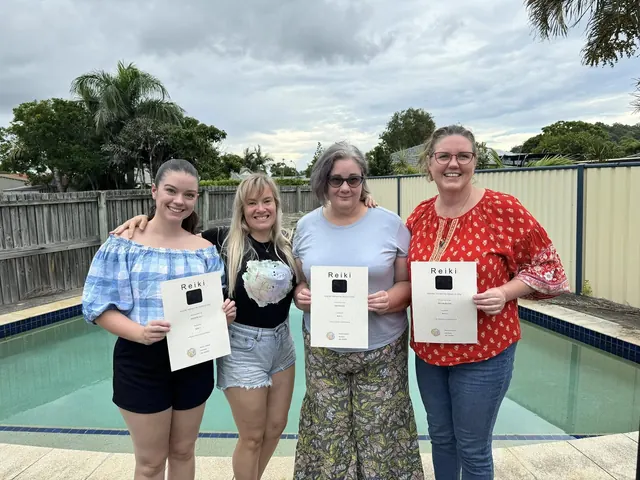

A moment for you
60 minutes · AUD $100
Reiki healing, with space to settle and receive.
90 minutes · AUD $120
Includes an oracle card reading and tuning forks.
HEART-LED HEALING · KILLARNEY, QUEENSLAND
A gentle space to pause, reconnect and remember the wisdom that has always been within you.
Read client reviews →✧ Rooted in nature. Guided by the heart.
THE HEART OF HEARTARA
Beneath the noise of everyday life, there is a quieter part of you that knows the way. Heartara is an invitation to listen. To find your own rhythm. To meet yourself with a little more kindness.
MY OFFERINGS
Individual healing, spiritual connection
and the warmth of shared ceremony.

60 minutes · AUD $100
Reiki healing, with space to settle and receive.
90 minutes · AUD $120
Includes an oracle card reading and tuning forks.

All nine rites: $450 for an individual journey, or $300 per person in a group of three. Explore sacred space, ceremony and my Peru journey.
Explore rites & ceremony ↗
Gather for intention, soul journeying and a heart offering: The Heart Blessing. An invitation to receive and be witnessed in shared presence.
Discover the group offering ↗In-person and distance Reiki · Three-session packages from AUD $280. Weekends, Mondays and selected weekday evenings after 5 pm. Request a booking →
A COMPANION FOR YOUR INNER KNOWING
An oracle for the beautifully human journey. For love and boundaries. Grief and joy. The moments we lose our way, and the moments we remember.
44 main cards, two separate Yes and No bonus cards, and a companion guidebook — created and written by Penny Kinman.
Discover the oracle ↗Release and purchase details to be confirmed.
MEET PENNY
I’m Penny Kinman, founder of Heartara. My path brings together nursing, Reiki, intuition and the everyday experience of being human.
As a Registered Nurse, Reiki Master and Munay Ki practitioner, listening and compassion sit at the heart of my work. Heartara was born where those worlds meet.
I believe we each carry our own wisdom. My role is to hold space as you reconnect with yours — with gentleness, choice and room to simply be.
My journey has also taken me to Peru and through spiritual initiations, including the Munay Karpay initiation in December 2025. I have been trained to offer despacho ceremony, which is now part of my work.
Read my story →With love, PennyLETTERS FROM THE HEART
A place for occasional writing on nature, spiritual practice and the quiet moments that bring us back to ourselves.
Visit the journal ↗GROWING AT THE HEART’S OWN PACE
A vision of rest, ceremony and reconnection in the Killarney ranges. A future sanctuary, with space to gather and simply be.
Future vision · No retreat bookings availableThe Heartara Journey Book and a separate angels and guides oracle are being explored as companions for reflection and remembering.
In development · No release dates announcedKIND WORDS
Reflections from Reiki sessions, ceremony and time shared with Penny.
“Spent a beautiful weekend at a mini retreat held by Penny taking time to slow down, reflect and reconnect with myself. Between the fire ceremony, oracle cards and Reiki session, it was a lovely opportunity to let go of what no longer serves me and make space for peace, healing and positive energy”
“I had reki from penny a few years ago when I had a sore arm I didn’t think it would stop the pain but I was surprised when it did I would definitely recommend it.”
“I have frequently received Reiki from Penny and cannot recommend her enough. She is a powerful spiritual healer with such a nurturing, intuitive and calming presence. Every session leaves me feeling deeply relaxed, grounded and more connected to myself. Penny has a beautiful way of creating a safe and nurturing space where you can let go, unwind and reconnect with your true self. I’m so grateful for her gift and the care she brings to every session ”
“I recieved numerous distance reiki sessions with Penny. Such a relaxing experience and not what i expected at all. Would definely recommend.”
“Reiki with Penny was so calm and relaxing... what a beautiful state to be in. Heartara is certainly an apt description of my experience - so many colours for me. Thanks Penny”
“was so relaxing, i didnt want it to end!”
“This is one of the best holistic therapies i have ever recieved. Carried out by not only a Reiki Master but a sensitive understanding person. I genuinely cannot recommend Heartara enough, it is definitely a must do again therapy.”
Your feedback is welcome. Messages go to Penny for review and are not published automatically. Please share your own experience and avoid including private health information.
Feedback is sent privately for Penny to review. It is not published automatically. To ask for removal of a published review, use the contact form.
YOU’RE WELCOME HERE
Have a question about a session, the oracle or what’s unfolding?
Send Penny a note. There’s no need to have it all figured out.